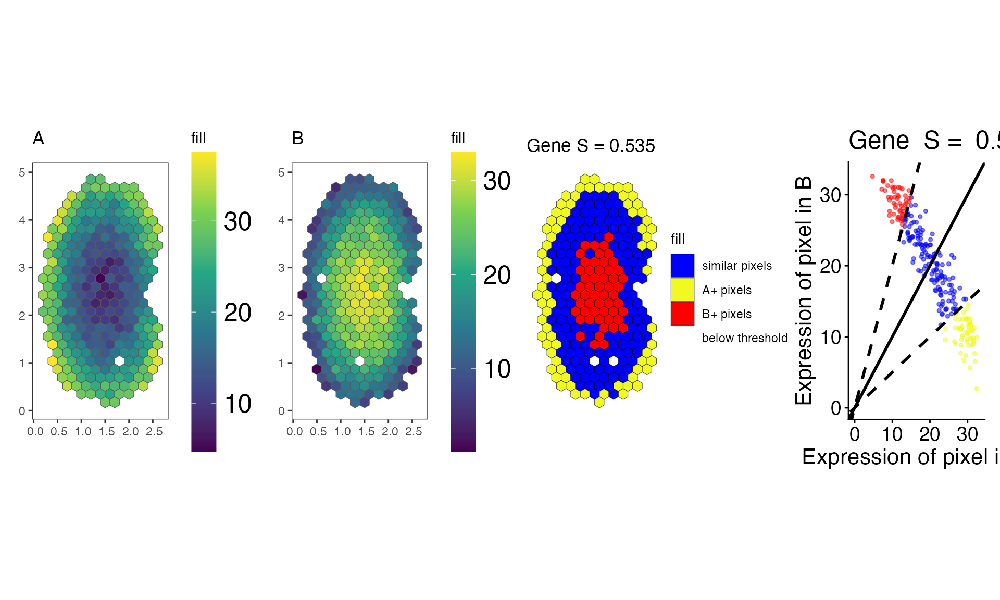

Maps, pixel classes and scatter plot of genes, optionally saved as PDF
Source:R/visualizationFunctions.R
savePlots.RdThis function creates a multi-panel plot for each gene showing spatial expression patterns, pixel classifications, and the expression scatter plot. Each gene gives a four-panel figure, which can also be saved as a PDF file. It needs the patchwork package.
Arguments
- geneNames
Character vector. Names of genes to visualize and save.
- spatialSimilarity
A list. Results from
spatialSimilarity()containing similarity tables and analysis parameters.- rastGexp
A list of two SpatialExperiment objects: the rasterized gene expression data that
spatialSimilarity()compared, in the same order. The names of the list are the titles of the expression panels.- assayName
A character string or numeric specifying the assay in the Spatial Experiment to use. Default is
NULL: the assay thatspatialSimilarity()used. It is used for all four panels.- filePath
Character. Directory where a PDF file is saved for each gene. Default is
FALSE: no files are written.
Value
A list containing the arranged plot objects for each gene, with gene names as list element names. Each plot object is a four-panel arrangement showing:
- Panel 1:
Spatial expression plot for the first experiment.
- Panel 2:
Spatial expression plot for the second experiment.
- Panel 3:
Pixel classification plot showing similarity categories (
pixelClass()).- Panel 4:
Expression scatter plot comparing the experiments (
linearRegression()).
Details
If filePath is a directory, each gene's figure is saved there
as a PDF file named after the gene (<gene>.pdf), 17 inches wide by 5
inches tall.
See also
plotGene(), the standardized figure of a gene in a
compareSpatial() result (the same panels, plus the native
resolution and the statistics).
Examples
data(speKidney)
##### Rasterize to get pixels at matched spatial locations #####
rastKidney <- SEraster::rasterizeGeneExpression(speKidney,
assay_name = 'counts', resolution = 0.2, fun = "mean",
square = FALSE)
rastAB <- list(A = rastKidney$A, B = rastKidney$B)
s <- spatialSimilarity(rastAB)
plts <- savePlots("Gene", s, rastAB)
plts
#> $Gene
#> Warning: Removed 15 rows containing missing values or values outside the scale range
#> (`geom_point()`).

#>